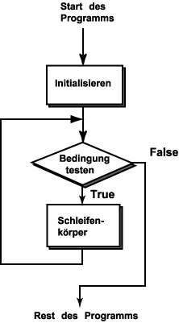

Der Wächter

Die Schleifenkontrollvariable (zaehler)
muss nicht exakt das Limit treffen,
das im Bedingungsteil von while geprüft wird:
while ( zaehler <= 6 )
In der Frage besteht der Wert "5" den Test.
Dann wird zaehler auf "7" inkrementiert.
Die "7" besteht den Test nicht.
Der Bedingungsteil von while ist wie ein "Wächter."
Er prüft sorgfältig, ob es der Ausführung erlaubt ist in den Schleifenkörper einzutreten.
Er kümmert sich nicht darum, wie es dazu kam; wenn der Test falsch ergibt,
wird der Schleifenkörper übersprungen.
Das wird in dem Flussdiagramm aufgezeigt.
Die Ausführung "fließt" entlang der Linien in Richtung der Pfeile.
Die Raute "Bedingung testen" repräsentiert den "Wächter".
Wenn die Bedingung als wahr getestet wird, wird die Ausführung
im Schleifenkörper fortfahren.
Wenn die Bedingung als falsch getestet wird, darf die Ausführung nicht in den Schleifenkörper hinein.
Sobald die Ausführung im Schleifenkörper ist, wird sie den gesamten
Schleifenkörper ausführen.
Dann geht die Ausführung zurück zum Kopf der Schleife,
wo der "Wächter" entscheidet ob sie den
Schleifenkörper erneut ausführen darf.
FRAGE 3:

Angenommen die Bedingung ist zaehler <= 6 und, dass
es viele Anweisungen im Schleifenkörper gibt.
Wenn eine der Anweisungen in der Mitte des Schleifenkörpers zaehler in
12 ändert, wird die Ausführung des Schleifenkörpers unmittelbar beendet?
(Hinweis: Betrachten Sie das Flussdiagramm.)